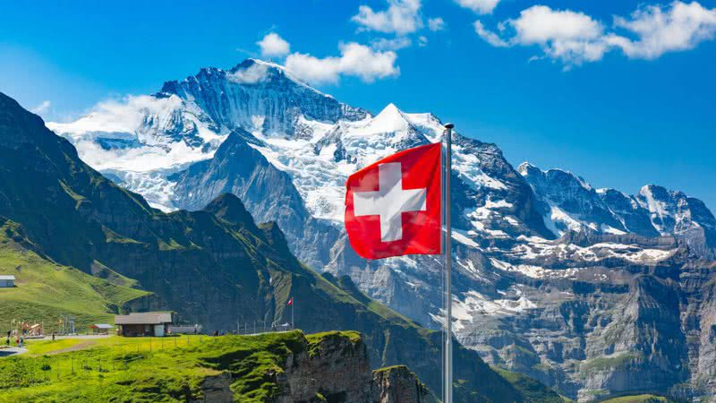

SUA PRÓXIMA VIAGEM
Conheça a Suiça
A Suíça possui uma cultura fortemente influenciada pelos países vizinhos, Alemanha, Itália e França, cujas populações foram contribuintes para o desenvolvimento cultural local. Cada cantão suíço possui festividades e manifestações próprias, muitas vezes derivadas de aspectos culturais locais.
-
Templo Haedong Yonggungsa
O Templo Haedong Yonggungsa é um templo budista localizado no extremo nordeste de Busan. Construído em 1376, é um dos poucos templos na Coreia construídos à beira-mar – você pode desfrutar de vistas do Mar do Leste de um lado e de belas montanhas do outro.
Bom para:
- História
-
Lucerna e o Lago dos Quatro Cantões
Visitar Lucerna e o Lago dos Quatro Cantões é uma experiência que combina história, beleza natural e cultura suíça em um só lugar. Lucerna é uma cidade encantadora, situada às margens do lago e cercada por montanhas majestosas, como o Monte Pilatus e o Monte Rigi. Essa localização privilegiada proporciona paisagens deslumbrantes em qualquer época do ano.
Bom para:
- História
-
Parque Youngdusan
Visitar Interlaken e a região de Jungfrau é uma experiência única para quem busca aventuras ao ar livre, paisagens alpinas de tirar o fôlego e um contato direto com a natureza. Localizada entre dois lagos cristalinos – o Lago de Thun e o Lago de Brienz – Interlaken é conhecida como a porta de entrada para os Alpes Berneses e é um dos destinos mais icônicos da Suíça.
Bom para:
- Casais
- Famílias
- Orçamento